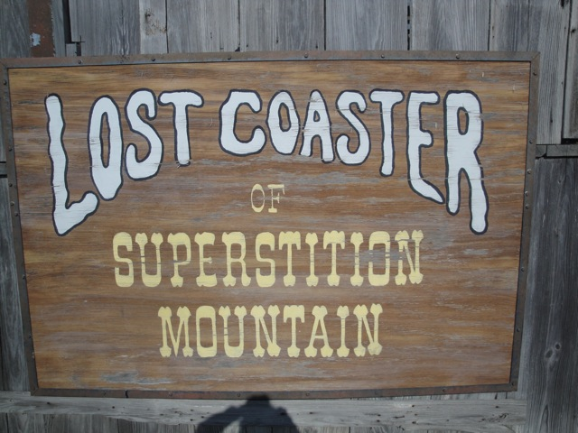

| |
Lost Coaster of Superstition Mountain Review

Today at Indiana Beach, we'll be reviewing Lost Coaster of Superstition Mountain, or as I like to call it, What the F*ck: the Ride. This has got to be one of the strangest and most f*cked up roller coasters on the entire planet. It is just odd in just about every single way possible. Now apparently, the ride was originally a dark ride. But in 2002, Indiana Beach wanted a new coaster and someone came up with the genius idea of "Hey! You know that dark ride we have? Lets turn that into a roller coaster!" And that's how Lost Coaster of Superstition Mountain was born apparently. And it really shows in the ride. Ok, lets get started on the ride. You get into your cages and buckle the seatbelts. Yeah. This ride has cages. They are very cramped and not very roomy. It's not a very comfortable roller coaster. Now you have a choice of sitting forewords or backwards. It's like on Invertigo. Now naturally, I chose to ride it backwards. That made it a very interesting ride. You go around a tight turn and down a little straight track before stopping. You then begin to rise up. Yeah. This ride has an elevator lifthill. Very interesting. Then out of nowhere, we stop rising and officially make it to the top of the lifthill. We then begin to travel slowly. But then out of nowhere, it feels like a mini power launch before going around a super tight banked turn. Its almost like on an Arrow Wild Mouse. And during that time, we go into a sort of tunnel. It's not really a tunnel since it's not completely dark. But it is indoors. We then get jerked again as we go around another wild mouse turn before going completely outdoors now. We then dip down, rise up, go through some more wild mouse turns and another dip. And keep in mind. This is all backwards. So all I can really tell is moving from side to side and going up and down in quick violent jerks facing other people looking confused. We then go through a few more super tight turns. The type of turns you see on a Fantasyland Dark Ride like Alice in Wonderland. Yeah. I can totally see the dark ride in this. We then go down a small drop and actually gain some speed before going through a turn. A real turn! Now granted, its pretty tight. But compared to the rest of the ride, it's big, grand, and swooping. We then rise up a hill, losing some of our speed, before going through a couple of dips. Backwards, it just feels like vibrations, or a clunky road full of potholes where you go up and down. And boom. We're back in a tunnel. BAM!!! More super tight dark ride turns. Its like cartoon zig zagging as we just go through a couple of crazy dark ride turns (speaking of which, what was the dark ride about when it was a dark ride?). We just go through a couple more turns when out of nowhere, a really small, but steep drop comes, and takes you by surprise. This gains a lot of speed before going through another dip only to SLAM into another Wild Mouse turn. We then go through another non wild mouse turn as we pop outside before going back inside. We get a couple of super random wild mouseish turns in the dark. When suddenly, we get a flash at a bear with some bears. Yeah. How f*cked up. We're now outside. We lost most of our speed. It looks like the ride is over. Nope. Chuck Testa. We then go down a small drop back into the dark, go through some more wild mouse turns, and what appears to be a train crossing sign with some red hellish lights. What? Is this Mr. Toads Wild Ride now? Well doesn't matter now. We go outside and go into the final brakes. We turn around and are let out of our cages. And that's Lost Coaster of Superstition Mountain. And man is it a f*cked up ride. Is it a good ride? Ehh.....I'm not really sure. There's certainly nothing incredible about it. There's no real Gs, no airtime, or anything incredible. Though there is a certain charm to it. A certain "Wow, how strange, quirky, and exotic" feel to this coaster. It's certainly got this odd feel to it, that I oddly enough really like. Would I recommend that you ride it when at Indiana Beach? Eh....Depends. It really is a unique ride and can be a lot of fun. So on that note, its definetly worth your time. On the other hand, it is closed a lot. And when it is open, it usually gets 2.5 hour lines due to its HORRENDOUS capacity (Yeah. You think S&S Free Spins are bad, take a look at this ride). And this ride, while...odd, and quirky, is NOT worth that 2.5 hour wait. So I'd recommend riding it. But be sure to ride it IN THE MORNING! Before it gets its 2.5 hour line. If you miss it, I'd skip it unless you REALLY want to experience something truely strange.
6/10
Location: Indiana Beach
Opened: 2002
Built by: Custom Coasters
Last Ridden: August 12, 2010
Lost Coaster of Superstition Mountain Photos


Home
|